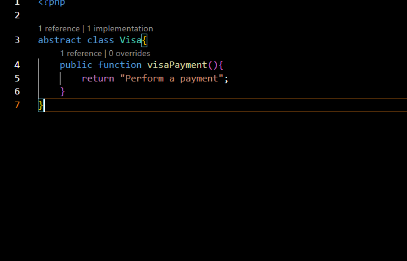

When you have abstract class, only a class that extends to this abstraction can interact with it; no objects are allowed to be instatiated from it otherwise.

RULE: You can only use abstract functions if the entire class is abstract.